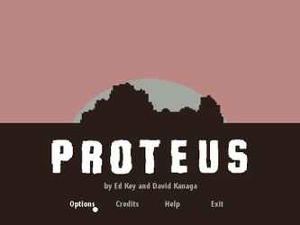
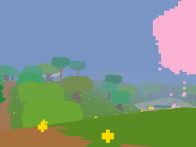

Proteus
Dieser Artikel wurde für die folgenden Ubuntu-Versionen getestet:
Ubuntu 14.04 Trusty Tahr
Zum Verständnis dieses Artikels sind folgende Seiten hilfreich:
Proteus  (Πρωτεύς) ist ein Meeresgott aus der griechischen Mythologie, welcher als Weiser und Meeresgott auf der Insel Pharos lebte. Im gleichnamigen Erkundungsspiel wandelt man durch eine spannende, schön gestaltete und zufällig generierte Inselwelt. Begleitet wird man von der Musik, welche die Umgebung durch Interaktion mit ihr während des Spielens hervorruft.
(Πρωτεύς) ist ein Meeresgott aus der griechischen Mythologie, welcher als Weiser und Meeresgott auf der Insel Pharos lebte. Im gleichnamigen Erkundungsspiel wandelt man durch eine spannende, schön gestaltete und zufällig generierte Inselwelt. Begleitet wird man von der Musik, welche die Umgebung durch Interaktion mit ihr während des Spielens hervorruft.
|  |  |
| Hauptmenü | Spielszene |
Installation¶
Entwicklerseite¶
Nach dem Erwerb des Spiels von der Entwicklerseite erhält man den Link zu einer persönlichen Seite. Von dieser kann das Spiel als .bin-Paket heruntergeladen werden. Nachdem man die Ausführrechte [1] gesetzt hat leitet man die Installation ein [2] und installiert das Spiel unter ~/Spiele:
./proteus-04042013-bin
Alternativ kann man einen Key für Steam anfordern und diesen einlösen.
Steam¶
Nach dem Erwerb des Spiels über die Vertriebsplattform oder den Client kann dieses anschließend über letzteren installiert [3] werden.
Tastenkürzel¶
| Tastenkürzel | |
| Taste(n) | Funktion |
| W + A + S + D | Steuerung |
| Esc | Spiel beenden |
| Alt + ⏎ | Vollbild- / Fenstermodus |

Infobox¶
| Proteus | |
| Genre: | Adventure |
| Sprache: | |
| Veröffentlichung: | 2013 |
| Entwickler: | Ed Key and David Kanaga |
| Systemvoraussetzungen: | 2.0GHz Prozessor / 3GB RAM / 512MB+ Grafikkarte |
| Medien: | Download |
| Strichcode / EAN / GTIN: | - |
| Läuft mit: | nativ |

- Erstellt mit Inyoka
-
 2004 – 2017 ubuntuusers.de • Einige Rechte vorbehalten
2004 – 2017 ubuntuusers.de • Einige Rechte vorbehalten
Lizenz • Kontakt • Datenschutz • Impressum • Serverstatus -
Serverhousing gespendet von